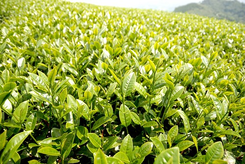

老實講若不是因為看到網路上人家介紹的生力農場 我不會有這麼強烈的意志帶一大家子人來隙頂 簡單乾淨的房間客廳以及美味的茶風味餐是農場的最大特色也是最令人回味無窮的 而年輕又建談的民宿主人夫婦 又更是增添我們這次旅行的深度與樂趣! 很棒的民宿 讓一大家子的小旅行圓滿又成功!
生力農場位於阿里山公路的56K處 真的就在大馬路邊 所以開車上阿里山時真的絕對曾經多瞧過這裡幾眼(我真的有印象) 每次的急駛而過時 誰能想像的到這裡的山景原來這麼美 而更難想像的是在這樣一個簡單的農莊建築物裡竟有著一個舒適溫馨的民宿 那天下午二點抵達農場時 霧很濃很濃 甚至在48-53K的那段路 霧濃到車子只有3公尺的能見度 所幸轉個山頭來到民宿後不是那樣的迷霧森林 但倒也真像是人間仙境啦(想像中的仙境應該就像這樣霧茫茫吧) 因為還要等其他人的會合 加上兩點就到民宿 不好意思太早打擾到主人家(一般住房都是3點check-in的) 我們便先在民宿外的 說這是景觀台也對 說是戶外遊戲區也是 看山玩耍打發時間 不過這時後民宿的小孩便跑過來 極興奮似地(尤其最小的那個)開始跟我們聊起天 雖然有點聽不太懂他講的 不過東扯西聊的挺有趣的 這兩天裡 小人們最愛坐這小搖椅 爸爸說這椅子很有FU 以後可以的話也來我家頂樓打造一個(徹爸還先照相好有圖為輔) 雖說實在很不好意思太早打擾主人家 可是看到民宿男主人一直笑著站在一旁 沒主動問我們要進房沒但就是一附等候著我們差遣的樣子 我更加的不好意思了 於是提早請男主人帶我們進民宿(覺得早點讓他介紹完 他反而好去辦事) 民宿的入口在出乎我們意外的建築物後方的樓梯走下去 原本大家都以為(這應該也是一般人認知)房間應該是在看的到的建築物二樓 結果沒想到是進入一個像是地下室的地方 雖然實在走的滿心狐疑 但樓梯口的一些可愛裝置讓人第一眼就感受到民宿的小巧溫馨 而走下樓後 每個人忍不住驚呼於這裡的別有洞天 原來這裡才不是什麼地下室 正確說法是剛在的那戶外遊戲區才是建築物的三樓阿 必須下兩層樓梯的一樓有三間房間 而下一層樓梯的二樓 除了有三間房外還有一個倘大公共區域 有客廳 有泡茶桌 有冰箱 洗衣機 大台開飲機 小洗槽 還有放有醫藥箱 牙線棒..的櫃子… 就像大家說的 從沒住過設備這麼齊全的民宿阿!
這是有著跟戶外遊戲區一樣視野的客廳 這是泡茶桌 還有後方放有好幾套齊全漫畫的書櫃(有我們家最愛的火影忍者哩) 有的人像是探險一樣 東走西看 有的人(當然是小人)玩起民宿內數量不算少的玩具 而有的人則悠悠閒閒的看起漫畫 雖然才下午三點 但我們忍不住開”泡”了 用著準備齊全且清潔擺放在烘碗機裡的茶具泡著農場自產的烏龍茶 茶真的好好喝! 喝著好茶看著漫畫或是聊聊天 好愜意阿! 雖然大家都愜意的懶神上身不想起身 但才下午3點多哩.. 難得來這 怎能不出去走走?! 於是吆喝大夥人起碼一起去二延平山步道走走吧! 5點走完步道 全部的人也都到齊 一起回到民宿 每家子各自進房放行李時 大夥才發現這陽台外的view好讚阿! 雖然沒能見著好天氣時色彩炫麗的夕陽雲海 可是大雨過後的山嵐是另一種的詩情畫意! 大姊很享受這樣的美景 (後方是大姐的德國姪子 最近來台灣學中文) 我與三姐以及大嫂三個人妻也很享受 (小人們玩到不知道找媽 當然好享受阿!) 不過我忍不住講了好幾次 “陽台應該擺幾張椅子的” 這是我對民宿唯一不滿意且衷心想建議的地方 陽台上的一個小桌子 小椅子配上這樣的山景 絕對可以讓房客愜意到都不想走了 大人們邊賞景邊聊天 直到愛愛高八度音的放送著”可以吃飯了 吃完飯還有表演可以看喔”(其實老闆說的應該是可以唱卡拉OK啦) 我們來到看的到的建築物二樓餐廳 準時六點的用餐 晚餐是跟主人預先訂的茶風味餐 以人頭數計價 (網路上看到的介紹文 有住的不多但是吃過這風味餐且讚不絕口的人不少) 我們大大小小17個人剛好坐兩桌 (還要抱的小小人就不算了) 菜還沒上 可是每桌上擺的兩大壺冰紅茶已經振奮著我們 而這時侯 那個下午很熱情跟我們聊天的民宿小兒子 一樣開心的走跳著 待大伙坐齊後 菜一樣樣的被端上桌: 龍鬚菜 過貓 山蘇 燴南瓜 紅茶豬腳 茶油雞 佐香椿的涼拌豆腐 清蒸鱸魚 烏龍茶雞湯 (我把菜全記住了 可見我是多麼的回味無窮阿) 其實都是很常見的食材 很簡單的料理 例如龍鬚菜 過貓 山蘇三樣都是簡單醬料的涼拌 但是當日下午才採的所以口口青嫩 尤其那個淋著胡麻醬的涼拌三蘇 我封他為今日的第一名 雖然後來經張大嫂品嚐且跟老闆娘驗證過為COSTCO買的胡麻醬 但誰會想到用這胡麻醬來佐山蘇阿 完完全全顛覆以前去任何山產店或快炒店的唯一山蘇吃法: 油油亮亮的小魚乾山蘇 重吃的徹爸本來就不愛拍食物(東西要趁熱吃對他來講是很重要的吃飯原則) 今天的晚餐更是好吃到 徹爸不想讓拍照打斷他對於這晚餐的享受(照一張山蘇算是對老婆有交待了) 每個人回味無窮的菜不一樣 徹爸最愛那燉到剛好 味道剛好的紅茶豬腳 大姊最愛那用山泉水做的石棹豆腐(石棹是地名 比隙頂再上去一點)還有綿密的南瓜 我則是每樣都好喜歡阿 吃到最後站起來時肚子撐的都有點痛了(很久沒這樣爆胃了) 令人佩服的是這些菜全都出於年輕的民宿男女主人的親手烹調 我忍不住追問 我看到第一眼就忍不住驚呼”好年輕呀”的女主人 她到底幾年次的 結果人家才69年次的 足足小我五歲哩… 但是更令人驚訝到有點忌妒的是 女主人不只是輔大畢業的大學生(也算當過台北姑娘的) 還是嘉義大學的碩士哩 外表看似平常大學生的女主人真的是青春 美麗 聰明又賢慧阿! 我說 “願意這樣嫁到山上 代表真的很愛他(男主人)” 女主人笑著說”阿就愛到了ㄇㄟ…” 不過聽說男主人很會煮菜 (我們的菜 大半都是男主人端上桌且說明這是什麼菜) 加上做得一手好茶(曾經得過全國紅茶製作第三名) 泡得一手好茶 真可以理解為什麼女主人說的”愛到了ㄇㄟ” 而聊天的同時 男主人還泡了自家農場的烏龍茶及熱紅茶給我們喝 也還傳授我們 泡出好喝冰紅茶的絕竅 我們甚至目睹到那個熱情的 才念中班的小兒子 竟然在廚房幫忙洗碗! (養出的小孩也是一絕) 我喜歡這對認真又有實力的年輕夫妻以及一家子!
回到民宿內的客廳後 大家繼續的泡茶 有的在玩牌 玩大老二 玩牌七 大家輪流的換人 有的在看漫畫(這兩天常可見大姊夫沉浸在他的漫畫中)  一大家子充分的利用&享受這個客廳
一大家子充分的利用&享受這個客廳  也有些人在房間裡玩最小的小baby 看著想學爬的佑佑努力的翻 努力的鑽 這是個大家都很開心的美好夜晚! 行程規劃時本來預計要去民宿一公里外的龍頂步道看日出 可是前一晚問起女主人時 女主人說”房間陽台就可以看到啦 如果要看180度視野的 那民宿對面的小路走個150公尺也就有了” 於是大家約好早上5點20分客廳集合 大家各憑本事起床 沒出現的就也不敲門了 其實大家起床後 看看窗外的天空都明白今天的厚雲層是很難看到日出的 但是大家還是一起走去可以看180度日出的山坡上
也有些人在房間裡玩最小的小baby 看著想學爬的佑佑努力的翻 努力的鑽 這是個大家都很開心的美好夜晚! 行程規劃時本來預計要去民宿一公里外的龍頂步道看日出 可是前一晚問起女主人時 女主人說”房間陽台就可以看到啦 如果要看180度視野的 那民宿對面的小路走個150公尺也就有了” 於是大家約好早上5點20分客廳集合 大家各憑本事起床 沒出現的就也不敲門了 其實大家起床後 看看窗外的天空都明白今天的厚雲層是很難看到日出的 但是大家還是一起走去可以看180度日出的山坡上  等候日出的時後(或許正確說法是等候日出該出現的時間過去) 三姐用他的iphone放著”那些年..”的電影主題曲 我說 這時後放著這首歌真是太有FU了 聽著歌等候著日出 大家的心情(回憶)好像回到年輕的大學時後 所以雖然日出不意外的沒見著(等到6點大家總算甘願回去) 但大家還是很開心! 沒刷牙沒洗臉的大家 回到民宿後繼續各自窩回自己的被窩裡睡回籠覺 大家還真的都又睡著了 直到快八點民宿主人的大兒子(今早換老大出馬)在客廳裡喊了好幾聲”大家起床吃早餐嚕” 大家才起床刷牙洗臉 而我更是加速地盥洗 因為我記得前一晚是跟女主人講八點半吃早餐阿 難道我記錯時間是八點 我趕緊跑去餐廳跟女主人確定 呵呵! 不是我記錯.. 當我們跟女主人提起這件事時 女主人笑說”阿好 這孩子亂搗蛋 要教訓一下” 不過我們是真的得該起床了啦! 一群大人在小孩面前睡這麼晚也真的不太好啦! 這時大姐也提起 前一晚當我們還在餐廳裡跟主人聊天時 那個叫大家起床的大兒子在民宿的客廳內 跟我們的阿公阿嬤說要泡茶給他們喝 張公張嬤說 還真的架勢十足哩! 雖然茶的味道沒太出來… 呵呵 我們說民宿的兩個兒子真的都超有個性的也超獨立的 這可也是民宿的賣點之一喔!
等候日出的時後(或許正確說法是等候日出該出現的時間過去) 三姐用他的iphone放著”那些年..”的電影主題曲 我說 這時後放著這首歌真是太有FU了 聽著歌等候著日出 大家的心情(回憶)好像回到年輕的大學時後 所以雖然日出不意外的沒見著(等到6點大家總算甘願回去) 但大家還是很開心! 沒刷牙沒洗臉的大家 回到民宿後繼續各自窩回自己的被窩裡睡回籠覺 大家還真的都又睡著了 直到快八點民宿主人的大兒子(今早換老大出馬)在客廳裡喊了好幾聲”大家起床吃早餐嚕” 大家才起床刷牙洗臉 而我更是加速地盥洗 因為我記得前一晚是跟女主人講八點半吃早餐阿 難道我記錯時間是八點 我趕緊跑去餐廳跟女主人確定 呵呵! 不是我記錯.. 當我們跟女主人提起這件事時 女主人笑說”阿好 這孩子亂搗蛋 要教訓一下” 不過我們是真的得該起床了啦! 一群大人在小孩面前睡這麼晚也真的不太好啦! 這時大姐也提起 前一晚當我們還在餐廳裡跟主人聊天時 那個叫大家起床的大兒子在民宿的客廳內 跟我們的阿公阿嬤說要泡茶給他們喝 張公張嬤說 還真的架勢十足哩! 雖然茶的味道沒太出來… 呵呵 我們說民宿的兩個兒子真的都超有個性的也超獨立的 這可也是民宿的賣點之一喔!
吃完早餐 我們又在餐廳裡跟男女主人聊了好久的天 他們翻著他們的相本 給我們看隙頂美麗的雲海照片 她們大兒子四歲泡茶上新聞的照片 也跟我們解說著眼睛看到的那片山 哪是玉山 哪是什麼山 說那個山頭平平的山叫做象山 (給我們看的照片真的有像大像) 說她們農場最遠的茶園在車程兩小時 好遠山頭上的那個小白點的地方… 大家建議主人應該在窗台旁立著一個對照圖好讓來到這的人看得更明白 畢竟不是每個人都有機會聽主人這樣介紹… 沒想到女主人搖搖頭說”我們只跟有緣人講” 聽到女主人這答案 大家忍不住大笑但我的心頭暖暖的”我們是有緣人!” 期間男主人又泡了好喝的冰檸檬紅茶 熱百香綠茶(加一種葉子就有像百香果的味道)給我們品嚐 徹爸看著男主人用著shock杯搖出好喝的檸檬紅茶 笑說”要去買shock杯 感覺茶shock shock後好喝” 我說”重點是要買這裡的紅茶 這裡的茶才是茶好喝的重點阿!” 真的! 他們家的紅茶真的好喝 有著特殊的茶香味 即使回家後 我沒有shock shock 我只是像泡茶那樣的簡單泡 還是好好喝!
農場今天本來就有安排好的採茶工作 加上剛好有”茶裡王”要來這裡拍一支廣告 所以一整個早上我們幾乎就呆在農場裡 看著工人的工作 聽著民宿男主人跟我們解說製茶的步驟與門道 (今日最大澄清之一就是其實紅茶的油切效果比綠茶好喔 綠茶只是比較刮胃以致廣告那樣的炒作 所以如果要油切要喝紅茶 要有活力能量喝綠茶 但是綠茶喝太多容易傷胃喔… ) (有關茶裡王 女主人興奮的說著茶裡王的阿里山那隻茶有用到他們家的茶喔 那開心 得意的表情就好像在說自己的孩子有多棒一樣 雖然我還是喜歡喝現泡的她們家的茶 但若有機會站在便利商店的冰櫃前猶豫著要喝什麼飲料時 看到隻茶我想會多份情感的.. ) 我們看到工人將茶婦剛採回的茶青倒出來曬 這時候 聽說是廣告男主人的男生(穿18號那個)出現了 透過參與工作 醞釀拍廣告的情緒吧! 我們湊熱鬧似的在一旁等著看好戲 結果原來都還一直是在醞釀情緒階段 這時候負責工作的人 (應該是民宿主人的哥哥吧 整個農場是民宿老闆的爸爸領著三兄弟一起做 而民宿經營只有當中的一個兒子負責) 把可以把茶青鋪勻的耙子交給大姐 要她試試這看似簡單的動作其實是有困難度的哩 據大姐說 真的不簡單阿! 要師傅才能把一大片茶青鋪的均勻滴 (由樓上的餐廳入口處往下看 挺壯觀的) 不知不覺就也這樣消磨到11點了… 時間過的真的好快… 趁著離開下山前 我們決定頂著烈陽去走民宿後面的茶園步道 因為女主人說 走到前面山頭的工寮處可以看到隙頂整個村落.. 下到茶園後 抬頭再看民宿 更是明白民宿的結構了 而看見民宿房間外的陽台正曬著的棉被 有一種暖洋洋 香香的感覺 另一個角度的茶園&民宿 我們走到可以遠眺隙頂整個村落的工寮處了 完成在隙頂的最後一個目的 這時候 大家發現山前面的那大片雲 不知道這樣算不算雲瀑 
回到民宿已經是中午12點 大家喝個涼後要趕緊下山去嚕 因為我們預約了山下一點的甕缸雞 怕太晚雞就飛了.. 徹爸說”真不可思議 我們竟然在民宿待了這麼久的時間 “ 前一天的兩點到現在的12點離開 真是給他很”待”夠本 “喝”夠本了! “大家喜不喜歡這個民宿”的問題 好像也不需要多開口問了…. 所以衷心的推薦大家上阿里山經過隙頂這裡時 可以停下來看看雲海 喝喝茶(買的茶也絕對是茶行自種自做的) 甚至就像我們這樣專程上來住一晚也是很棒的! 一點都不輸任何地方的愜意喔!(尤其那個茶真的助興)  補充: 1.話說女主人說 她們民宿跟附近的有名歐式民宿(仔仔拍過偶像劇)客群很不一樣 例如: 歐式民宿拒絕12歲以下小人的入住 我感覺民宿的網路口碑很好 但實際上的入住率卻好像並不高哩…. 真的有待大家口而相傳的傳播下去 支持著這些當地人經營的好民宿 2.女主人寫的有關茶裡王廣告拍攝: www.wretch.cc/blog/shengli/34594217
後記: 旅行的最後一站是一樣的番路鄉(不過已經40分鐘車程的山下) 菜公店甕缸雞 店家只有週六日販售 而生意好到爆 雖然我前一天有預先打電話訂了三隻雞(是要訂雞 不是訂位子)也刻意訂下午一點 好避開用餐尖峰時段 但是店裡還是人聲鼎沸且還是得等雞等一陣子 不過雞上桌後 果然色香味俱備 好好吃阿! (其他的筍 菜也都好吃) 吃完雞 繼續加碼隔壁的黑糖山愛玉 美味! 涼快! 因為是大人小人共享 為了避免媽媽一再的貪食 愛愛張大嘴大口大口的吃 哎呀! 太大口 冰到了吧! 不過愛愛說 “真的好好吃阿!” 兩點多結束充滿地方味的烤雞大餐 宣告今年家族旅行圓滿成功的結束了 謝謝大家的配合! 不過 我們忘記在隙頂來個全家福大合照了啦! 此行的最大殘念!!!